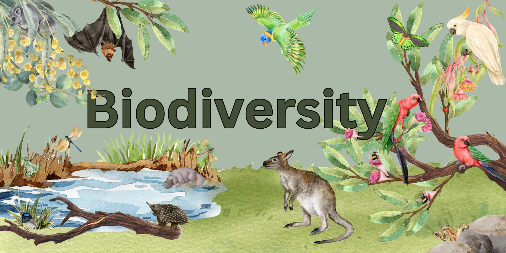
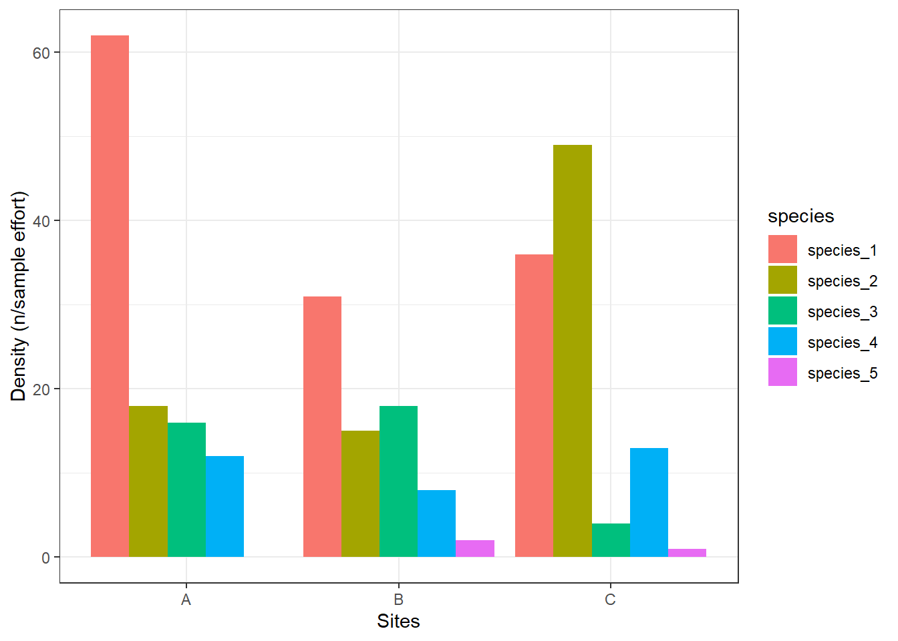
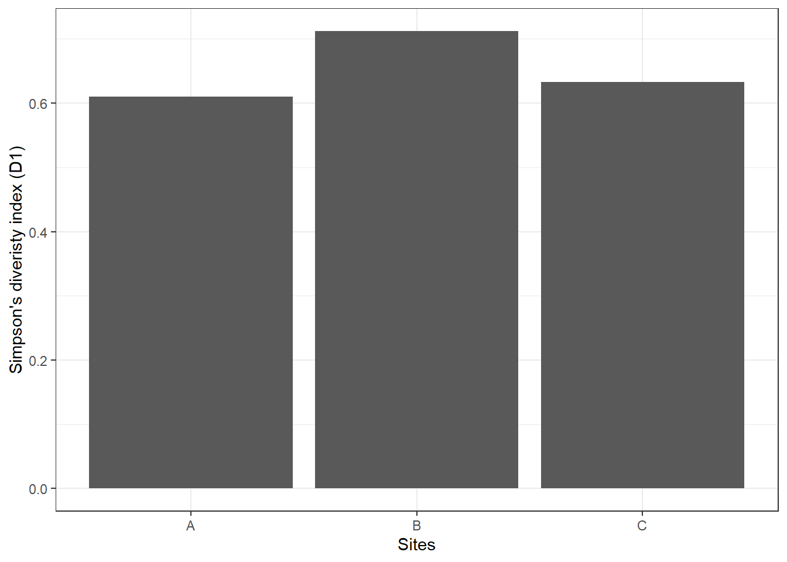
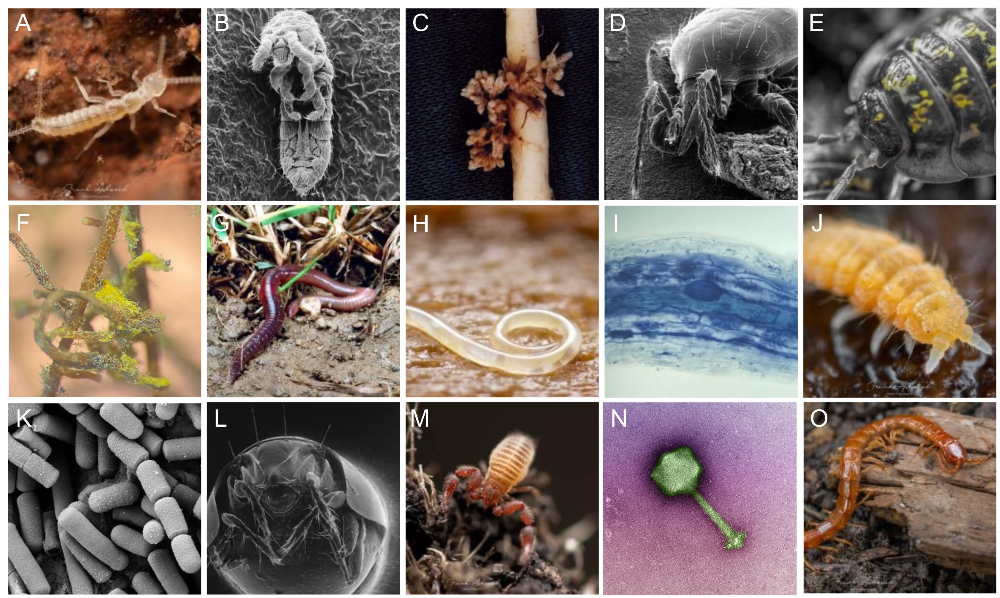

#install.packages('vegan')
# Load library
library(tidyverse)
library(vegan)
# Create fake survey data
fake_data <- data.frame(
site = c("A","A","A","A","A",
"B","B","B","b","B",
"C","C","C","C","C"),
species_1 = c(57,73,20,75,83,
41,6,61,45,2,
0,93,0,0,86),
species_2 = c(31,12,4,41,4,
49,2,7,7,9,
54,64,35,38,53),
species_3 = c(0,38,3,0,39,
0,29,24,15,23,
10,0,1,5,2),
species_4 = c(11,28,19,0,1,
34,7,0,1,0,
1,0,12,45,5),
species_5 = c(0,0,0,0,0,
4,5,0,0,0,
3,1,0,1,2)
)
# Clean data identified with incosistencies in format
fake_data_clean <- fake_data %>%
dplyr::mutate(site = recode(site, "b" = "B"),
site = as.factor(site))3 Diversity Indices
Week 3 - Measurements of biodiversity
In this workshop, you will learn different types of ways to quantify diversity and abundance in your dataset. This section is particularly important for groups who are doing field studies, but this quantitative skill is also useful if you have a job in field ecology.

Background reading
Biodiversity can be measured using different scales and metrics, most commonly by looking at species richness (the number of different species) and species evenness (the relative proportion of individuals in each species). Other measurements include alpha, beta, and gamma diversity, which describe diversity within a single site, between sites, and across a larger region, respectively. Here, we will focus on the most common ways of quantifying diversity and abundance.
Abundance metrics
Absolute abundance (\(N_i\)): The total number of individuals of a species recorded. A simple and intuitive calculation, but sensitive to sampling effort, i.e, cannot compare across surveys without standardisation. Only use when sampling effort is standardised (e.g., same transect length, trap nights).
Relative abundance (\(p_i\)): Comparable across communities and is foundational for many diversity indices. Only use when communities have differing total abundance, or you need proportional representation, or over time.
Density (\(d_i\); individuals per area or effort): Allows spatial comparison, but requires accurate area/effort estimates. Appropriate for quadrat/plot/transect sampling.
Species richness metrics
Species richness (\(S\)): The total number of unique species. A sample and intuitive calculation, but highly sensitive to sample size and rare species. Only use when comparing equally-sampled plots or as a component in more complex metrics.
Rarefied richness: Standardised species richness for a fixed number of individuals or samples. Allows fair comparison across unequal sampling effort, but assumes random sampling, i.e low resolution when sample sizes differ greatly. Only use in surveys with unequal effort.
Diversity indices
Shannon diversity index (\(H'\)): Incorporates both species richness and evenness (the relative abundance of each species). Widely used, but difficult to interpret ecologically. Moderately sensitive to rare species, but good for comparing diversity across sites or time when both abundance and richness matter.
Simpson’s diversity index (\(D\)): Emphasises the dominance of species and is less sensitive to rare species. However, underweights rare species and may mask losses in low-abundance taxa. Use in management-focused studies (dominance effects), and stable community comparisons.
Other types of diversity metrics such as Rényi and Tsallis diversities, taxonomic diversity and taxonomic distinctness, alpha and beta diveristy can also be done with the vegan R package.
New functions
Here are some new functions from the tidyverse you will be using in this workshop.
pivot_longer()converts data from wide format to long format.starts_with()*used insideselect()to choose columns whose names begin with a specific string.across()* applies a function to multiple columns in asummarise()ormutate()call. e.g.everything()= select all columns andsum= function to apply..x* is a pronoun used inside anonymous functions in tidyverse pipelines—especially inacross()andmap(). It represents the current column being processed.
’*’ See ‘Relative abundance’ section for example use.
Calculations of abundance
We will start with this fake ecological survey data. Also, to calculate Shannon and Simpson’s diversity, we will need the the vegan package.
Equation:
\[ N_i = \sum_{j=1}^{k} n_{ij} \] where \(n_{ij}\) - individuals of species \(i\) in sample \(j\). Essentially its just the number of individuals of that species counted.
To calculate absolute abundance of one species in R, here is the following code.
# for one species
sum(fake_data_clean$species_1) # Total abundance for all or individual species across all sitesYou can see that the total number of species_1 in the survey is 642.
You may want to calculate abundance for each species, by site.
fake_data_long <- fake_data_clean %>%
tidyr::pivot_longer(!site, names_to = "species", values_to = "abundance") # convert wide format to long format (easier to summaries groups)
abundance_sum <- fake_data_long %>%
group_by(site, species) %>%
summarise(total = sum(abundance))
# Visulise abundance
abundance_sum %>%
ggplot() +
geom_bar(aes(x = species, y = total), stat = "identity") +
labs(x = "Species", y = "Total abundance") +
theme_bw() +
coord_flip()
You can see that the total number of species_1 is 308 in site A, 155 in site B, and 179 in site C.
Equation:
\[ p_i = \frac{N_i}{\sum_{i=1}^{S} N_i} = \frac{N_i}{N} \]
where \(p_i\) is the relative abundance of species \(i\), \(N_i\) is the abundance of species \(i\), \(\sum_{i=1}^{S} N_i = N\) is the total abundance across all species in the community, \(S\) is the total number of species.
For example, if 10 of the 50 individuals in a quadrat are species A: \(p_i\) = 10/50 = 0.20, meaning species A makes up 20% of the community.
To calculate relative abundance of each species in R, here is the following code.
# Option 1 - using wide format data
fake_data_clean %>%
select(starts_with("species_")) %>% # select all columns with "species_"
summarise(across(everything(), sum)) %>% # For each column (using across), calculate the sum of all values (everything). i.e total abundance per species
mutate(total = sum(across(everything()))) %>% # total abundance of all species
mutate(across(starts_with("species_"), ~ .x / total)) # For each species column, take its values (.x) and divide by total. species_1 species_2 species_3 species_4 species_5 total
1 0.4517945 0.2885292 0.1330049 0.1154117 0.01125968 1421# Option 2 - using long format data
relative_sum <- fake_data_long %>%
group_by(species) %>%
summarise(species_sum = sum(abundance),
relative_abundance = species_sum / sum(fake_data_long$abundance))
# Visualise relative abundance by species
relative_sum %>%
ggplot() +
geom_bar(aes(x = species, y = relative_abundance), stat = "identity") +
labs(x = "Species", y = "Relative abundance") +
theme_bw() +
coord_flip()
To calculate relative abundance of each species within each site.
# Option 1 - using wide format data
fake_data_clean %>%
group_by(site) %>%
summarise(across(starts_with("species_"), sum)) %>% # total abundance per species per site
mutate(total = rowSums(across(starts_with("species_")))) %>% # site-level total abundance
mutate(across(starts_with("species_"), ~ .x / total)) # divide species abundance by site total# A tibble: 3 × 7
site species_1 species_2 species_3 species_4 species_5 total
<fct> <dbl> <dbl> <dbl> <dbl> <dbl> <dbl>
1 A 0.571 0.171 0.148 0.109 0 539
2 B 0.418 0.199 0.245 0.113 0.0243 371
3 C 0.350 0.477 0.0352 0.123 0.0137 511# Option 2 - using long format data
relative_site_sum <- fake_data_long %>%
group_by(site, species) %>%
summarise(total_abundance = sum(abundance)) %>%
mutate(site_total = sum(total_abundance),
rel_abundance = total_abundance / site_total)
# Visualise results
relative_site_sum %>%
ggplot() +
geom_bar(aes(x = site, y = rel_abundance, fill = species), stat = "identity", position = position_dodge()) +
labs(x = "Sites", y = "Relative abundance") +
theme_bw()
We see that species_1 makes up about 57% of the sample for Site A, and species_4 makes up about 11% of the sample. Once we calculate relative densities for each species at each site, this eliminates differences in total density at each site because all sites then total to 1.
Equation:
\[ d_i = \frac{N_i}{A} \]
where \(d_i\) is the density of species \(i\) (e.g, individuals/ha), \(N_i\) absolute abundance of species \(i\), \(A\) is the area sampled (e.g. m2, ha, km2).
For example, if you counted 42 lizards in a 0.5 ha plot: \(d_i\) = 42/0.5 = 84 individuals/ha.
To calculate density for each site per sampling event (individuals/site/sampling event) in R, here is the following code.
# Option 1 - wide format
fake_data_clean %>%
group_by(site) %>%
summarise(round(across(starts_with("species"), mean, na.rm = TRUE))) # calculates the mean count per site across the sampling period.# A tibble: 3 × 6
site species_1 species_2 species_3 species_4 species_5
<fct> <dbl> <dbl> <dbl> <dbl> <dbl>
1 A 62 18 16 12 0
2 B 31 15 18 8 2
3 C 36 49 4 13 1# Option 2 - long format
density_sum <- fake_data_long %>%
group_by(site, species) %>%
summarise(density = round(mean(abundance))) # calculates the mean count per site across the sampling period.
# Visualise results
density_sum %>%
ggplot() +
geom_bar(aes(x = site, y = density, fill = species), stat = "identity", position = position_dodge()) +
labs(x = "Sites", y = "Density (n/sample effort)") +
theme_bw()
We can see here that site A has 62 individuals per sampling effort for species_1, while site B has 31 indidvuals per sampling effort for species_1.
If you want density of all individuals by site, then use the following code.
fake_data_long %>%
group_by(site) %>%
summarise(density = round(mean(abundance))) # calculates the mean count per site across the sampling period.Site A has an average of 22 individuals per sampling effort, while site B has an average of 20 individuals per sampling effort.
Exercise 1 (10 min)
🧪 Complete the following task for the excerise_survey_data below
- Calculate the absolute abundance, relative abundance, and density of all species by sites
- What is the absolute density of species_1?
- What is the relative abundance of species_2 in site B?
- What is the mean density of species_3?
excerise_survey_data <- data.frame(
site = c("A","A","A","B","B","B","C","C","C"),
plot = c(1,2,3,1,2,3,1,2,3),
species_1 = c(12, 7, 15, 4, 9, 6, 20, 18, 25),
species_2 = c(5, 2, 1, 10, 7, 4, 3, 1, 0),
species_3 = c(0, 3, 2, 6, 4, 5, 0, 1, 2),
species_4 = c(8, 6, 3, 1, 4, 2, 10, 7, 5)
)Show answer
excerise_survey_long <- excerise_survey_data %>%
tidyr::pivot_longer(!c(site, plot), names_to = "species", values_to = "abundance")# convert wide format to long format (easier to summaries groups)
excerise_survey_sum <- excerise_survey_long %>%
group_by(site, species) %>%
summarise(species_sum = sum(abundance), # calculates abundance
relative = (species_sum / sum(excerise_survey_long$abundance) * 100), # calculates relative abundance
density = round(mean(abundance)) # calculates density (individuals/plot)
)
# answer 1
excerise_survey_sum %>%
filter(species == "species_1") %>%
pull(species_sum) %>%
sum()
# answer 2
excerise_survey_sum %>%
filter(species == "species_2", site == "B") %>%
select(relative)
# answer 3
excerise_survey_sum %>%
filter(species == "species_3") %>%
pull(density) %>%
mean()
# 1. 116
# 2. 9%
# 3. 2.6Calculations of species richness
Equation:
\[ S = number \, of \, species \, observed \]
To calculate species richness in R, here is the following code. Note, you will need to remove zeros when using length() to count number of species because length will include zero.
# Option 1 - using tidyverse
fake_data_long %>%
filter(abundance != 0) %>% # remove rows with zeros (e.g. no species 5 in site A)
group_by(site) %>%
summarise(total = length(unique(species))) In our fake dataset, we have four species in site A, and all five species in site B and C. Note, if we includes zeros in this calculation, we would get species_5 in the count which means all sites would have five species, which is incorrect.
Species richness increases with sample size, and differences in richness actually may be caused by differences in sample size. To solve this problem, we may try to rarefy species richness to the same number of individuals.
To calculate absolute abundance of one species in R, here is the following code.
# sum species counts per site
site_counts <- fake_data_clean %>%
group_by(site) %>%
summarise(across(where(is.numeric), sum))
# Rarefied richness needs a “sample size” = smallest total abundance across sites.
nmin <- rowSums(site_counts[ , -1]) %>% min()
rarefied_richness_output <- vegan::rarefy(site_counts[ , -1], sample = nmin)
# add rarefied results to sites
rarefied_richness <- bind_cols(site = site_counts$site,
rarefied_richness = rarefied_richness_output)In this fake dataset, the results are the same as your standard species richness count. When you have more complicated and more variable datasets with lots of rare species, this calculation might be useful. Always justify which metric you plan to use in your report.
Exercise 2 (10 min)
🧪 Complete the following task for the excerise_survey_data below
- Calculate the species richness by sites.
- What is the richness of site C?
Show answer
# Species richness
excerise_survey_long %>%
filter(abundance != 0) %>% # remove rows with zeros (e.g. no species 5 in site A)
group_by(site) %>%
summarise(total = length(unique(species)))
# 1. 4Calculations of diversity
Equation:
\[ H' = - \sum_{i=1}^{S} p_i \,\ln(p_i) \] where \(H'\) is Shannon diversity index, \(S\) is the total number of species in the community (species richness), \(p_i\) is the relative abundance of species \(i\) (see relative abundance). High \(H'\) = many species, relatively even abundances, while low \(H'\) = few species or dominance by one/few species.
To calculate \(H'\) in R, here is the following code. Note, y
shannon_output <- vegan::diversity(site_counts[, -1], index = "shannon") # remove site column [,-1] for the diversity function to work
# add H results to sites
shannon_sum <- bind_cols(site = site_counts$site,
shannon = shannon_output)
# Visualise results
shannon_sum %>%
ggplot() +
geom_bar(aes(x = site, y = shannon), stat = "identity") +
labs(x = "Sites", y = "Shannon diveristy index (H')") +
theme_bw()
If \(H'\) = 0, only one species is present (no diversity). A value of 1.36 in site B means site B has slighty higher diversity than site A and site C. i.e. more species and/or a more even distribution of individuals among species.
Equation:
\[ D_1 = 1 - \sum_{i=1}^{S} p_i^2 \]
where \(D_1'\) is Simpson’s diversity index, \(S\) is the total number of species in the community (species richness), \(p_i\) is the relative abundance of species \(i\) (see relative abundance). High \(D_1\) = high diversity, while low \(D_1\) = low diversity.
For inverse Simpson’s diversity index, the equation is:
\[ D_2 = \frac{1}{\sum_{i=1}^{S} p_i^2} \] where \(D_2\) is the inverse of Simpson’s diversity index. if \(D_2\) = 1, only one species is present, and if \(D_2\) is higher then more species are present/or more even distribution.
To calculate \(D_1\) in R, here is the following code.
simpson_output <- vegan::diversity(site_counts[ , -1], index = "simpson") # remove site column [,-1] for the diversity function to work
# add D1 results to sites
simpson_sum <- bind_cols(site = site_counts$site,
simpson = simpson_output)
# Visualise results
simpson_sum %>%
ggplot() +
geom_bar(aes(x = site, y = simpson), stat = "identity") +
labs(x = "Sites", y = "Simpson's diveristy index (D1)") +
theme_bw()
Similar to Shannon diversity index, site B has higher \(D_1\) of 0.71 compared to the other two sites.
Exercise 3 (10 min)
🧪 Complete the following task for the fake_data_clean below
- Calculate the Shannon diversity index, and Simpson’s diversity index by sites
- What is the diversity of site A using the Shannon diversity index (\(H'\)) method?
- What is the diversity of site B using the inverse Simpson’s diversity index (\(D_2\)) method?
Show answer
# sum species counts per site
excerise_survey_sum <- excerise_survey_data %>%
group_by(site) %>%
summarise(across(where(is.numeric), sum))
# Shannon diversity
bind_cols(site = excerise_survey_sum$site,
shannon = vegan::diversity(excerise_survey_sum[, -c(1, 2)], index = "shannon"),
simpson = vegan::diversity(excerise_survey_sum[, -c(1, 2)], index = "invsimpson"))
# 1. 1.14
# 2. 3.5Assessment
Task to complete before the end of the workshop.
Here is an example from a real dataset looking at the effects of experimental drought on soil invertebrate communities, called invert_exp_survey.csv (Farkas et al., 2025).
The invertebrate diversity is grouped at order level, with the exception of Crustacea (subphylum), Diplopoda (class), Chilopoda (class), and Annelida (phylum).

Use the skills that you learnt in the previous practical and this weeks practical to complete the following assessment with the example dataset invert_exp_survey.csv:
1. Load data and inspect structure
- Import the CSV file
- Inspect the structure and column names
- Check for missing values
- Check for duplicate rows
2. Calculate and visualise relative abundance by treatment (i.e, Within each treatment, what proportion of the total community does each invertebrate order make up?)
- Sum the total abundance of each order by treatment. Hint: use Option 2 - using long format data (one row per sample × order)
- The figure should look close to this.
rel_abund %>%
ggplot() +
geom_bar(
aes(x = order, y = rel_abundance, fill = treatment),
stat = "identity",
position = position_dodge()
) +
labs(x = NULL, y = "Relative abundance") +
theme_bw() +
coord_flip()
3. Calculate species richness per treatment
- Count the number of unique invertebrate orders with abundance > 0
4. Calculate Shannon diversity index by treatment
- You can find the code to summarise species counts per site under the ‘rarified species’ section (
site_counts). - Apply
vegan::diversity() - Apply
bind_cols()to match the shannon numbers with your treatment names. - Plot it, the figure should look close to this.
shannon_inv %>%
ggplot() +
geom_bar(
aes(x = treatment, y = shannon),
stat = "identity"
) +
labs(x = "Treatment", y = "Shannon diveristy index (H')") +
theme_bw()
For the adventurous folks
Try to get Shannon diversity index by treatment and block. Convert wide data to sums per treatment x block.
See if you can replicate this figure.
shannon_inv %>%
ggplot() +
geom_point(aes(x = treatment, y = shannon), size = 2) +
labs(x = "Treatment", y = "Shannon diveristy index (H')") +
theme_bw()
This is more reflective of the normal variation across experimental blocks and where your report should be going towards instead ot the mean only.
Part 2 - The Islands
In this section, I will introduce the third option for your group assessment, a simulation-based project that uses the software called ‘The Islands’. Go to the Islands section for information on the Island.
*Note: It’s good to familiarise yourself with the Islands anyway as a backup project if your field or lab study does not go well.